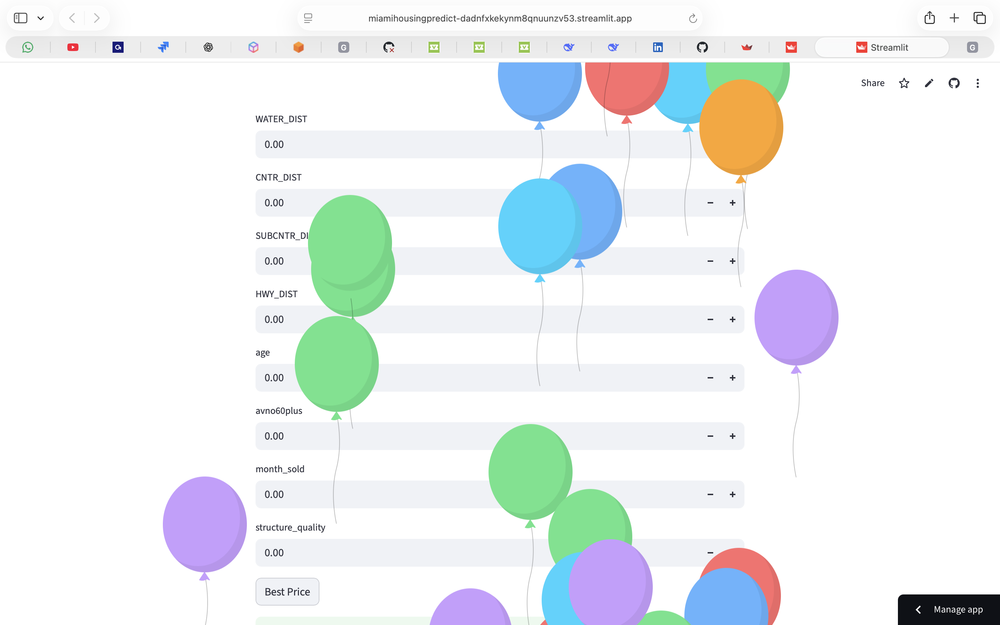
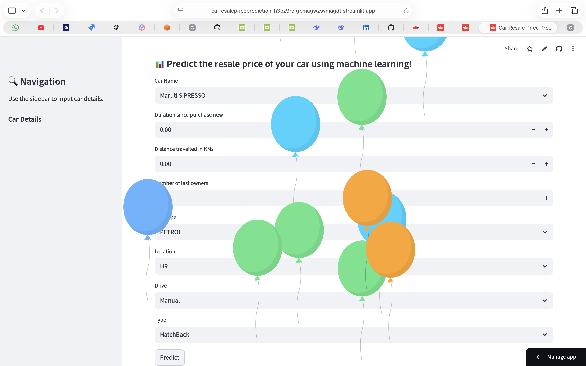
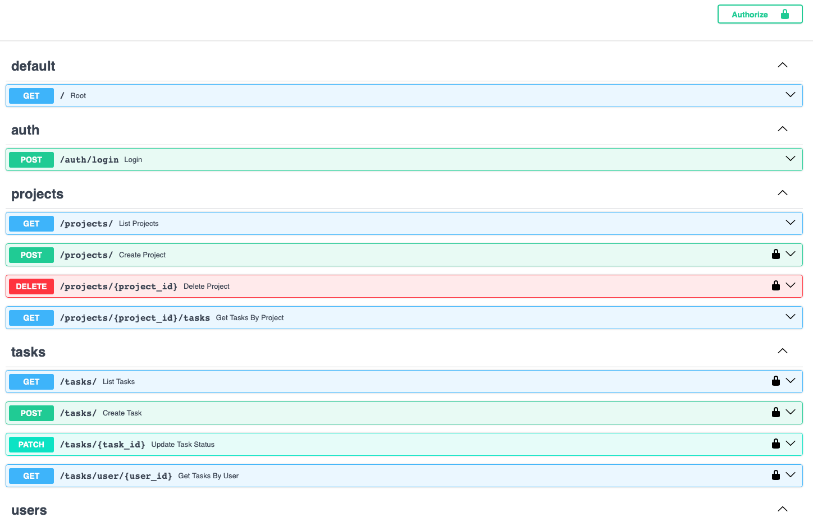

Service Visibility
Network-level discoverability across partner and client ecosystems.
Network Visibility Tech Services
I help businesses increase technical visibility and acquire clients through protocol-compliant, backend-first solutions.

Business Focus
Network-level discoverability across partner and client ecosystems.
Scalable workflow systems, secure APIs, and robust persistence layers.
Containerized deployment pipelines using AWS and Docker for reliable operations.
Forecasting and trend analysis to guide growth decisions with measurable outcomes.
Featured Projects

Regression-oriented analysis focused on feature engineering and model interpretation.
Regression • Market Trends • Forecasting
Pricing and resale workflow with structured data processing and value prediction.
ML Modeling • Value Estimation • Data Processing
Modular task and workflow platform with backend services and persistence architecture.
Workflow Systems • Backend Services • ScalabilityComparative experiments across linear, ridge, lasso, and polynomial regression models.
Model Evaluation • Comparative Analysis • Forecast QualityTechnology Stack
Java, Spring Tool Suite, JDBC, JPA, FastAPI, SQLAlchemy, Alembic, REST API design.
PostgreSQL, NumPy, Pandas, Matplotlib, Seaborn, and scikit-learn regression workflows.
AWS (EC2, S3, RDS, IAM), Docker containerization, reproducible multi-service environments.
Contact